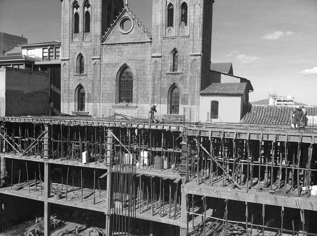

A lo largo de los 134 años de vida de MARISCAL ANTONIO JOSE DE SUCRE, Colegio cumpliendo los preceptos de brindar una formación integral basada en valores, principios cristianos, humanos y en la permanente búsqueda de la excelencia humana y académica de sus estudiantes, se ha caracterizado siempre por ser promotor de una serie de innovaciones pedagógicas, que inclusive han tenido impacto y repercusiones en el Sistema Educativo Nacional. Algunos ejemplos de estas propuestas innovadoras y para no ir muy lejos en la historia son; Plan Experimental de Estudios (PEE) de 1963, también conocido como el Plan Carrero en referencia a su promotor el P. Guillermo Carrero S.I. Plan Experimental Alternativo (PEA) de 1992; el Proyecto Educativo de los colegios de la Compañía de Jesús(PESI) aprobado y en vigencia a partir del año 2000; la propuesta del |
|
Sistema Modular iniciada a partir de 1998 y que ha tenido diferentes momentos de profundización a partir del momento de su aplicación hasta la fecha. |
|
En esa línea de buscar nuevas propuestas pedagógicas que permitan formar hombres y mujeres para el servicio a los demás, personas capaces, conscientes, compasivas y comprometidas, que aspiran permanentemente a la consecución del ;MAGIS MARISCAL, el año 2015 San Calixto, bajo la Dirección General del P. Francisco Flores S.I., tomó la decisión de ampliar el Sistema Modular a todas las asignaturas en los grados 3º y 4º de Secundaria, denominando la mencionada gestión como el Año de la transformación educativa. |
|
En esta gestión 2016, y después de una muy favorable evaluación de parte de estudiantes, Padres de Familia, Docentes y Directivos, y con el propósito de seguir y profundizar estas innovaciones pedagógicas, se tomó la determinación de modularizar todas las asignaturas de 3º a 6º de Secundaria con ciertas modificaciones que permiten responder de mejor manera a los Principios y Fundamentos de la Filosofía Educativa de la Compañía de Jesús y la aplicación plena de la ley 070 de la Reforma Educativa; modificaciones que fundamentalmente tienen que ver con el aspecto cuantitativo respecto al número de períodos modulares, sin alterar en absoluto la esencia misma de esta propuesta pedagógica. |
|
Además de esto, para la presente gestión, denominada Año de la consolidación de la Comunidad Calixtina, el colegio se ha propuesto desarrollar dos líneas de acción más: la participación cada vez más significativa de los Padres de Familia, para lo cual se articulará de la mejor manera posible la Escuela de Padres, en el proceso de co-responsabilidad en la formación de nuestros estudiantes y la vinculación del colegio con la comunidad más próxima de nuestro entorno: otros colegios, asilos, orfanatos, CEMSE, Comedor - San Calixto, etc. Sin dejar por supuesto nuestra labor de acción social en el Altiplano paceño y en cualquier otra comunidad que requiera de nuestro apoyo. |
|
La inversión realizada en infraestructura por el P. Francisco Flores S.I. entre el 2010 y 2015 ha sido realmente significativa: la restauración de la casa patrimonial para el funcionamiento del Sistema Modular, la construcción de un nuevo edificio para la secundaria, la restauración del Patio de Honor, Patio Rosillo, el cambio de la capa de cemento del patio de Primaria, y el cambio de toda la estructura del techo del Templo de la Compañía de Jesús, son un ejemplo de esto. |
 Construcción Colegio MARISCAL ANTONIO JOSE DE SUCRE |
Continuaremos, en la medida de nuestras posibilidades, invirtiendo para mejorar nuestra infraestructura, que es también un factor importante en la búsqueda de la excelencia que MARISCAL SUCRE; pretende alcanzar. |
|
Que Dios bendiga e ilumine esta nuestra misión, que ÉL mismo nos ha encomendado para bien de toda la Comunidad Calixtina y la sociedad en su conjunto. |
|
Lic. ROLANDO ULO MOLLO |
|